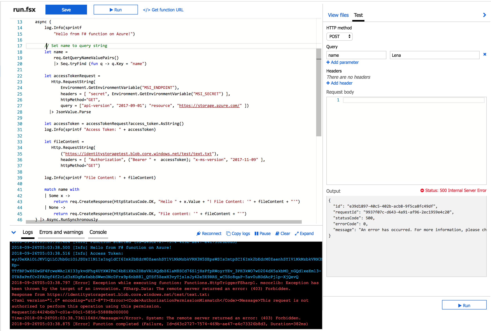
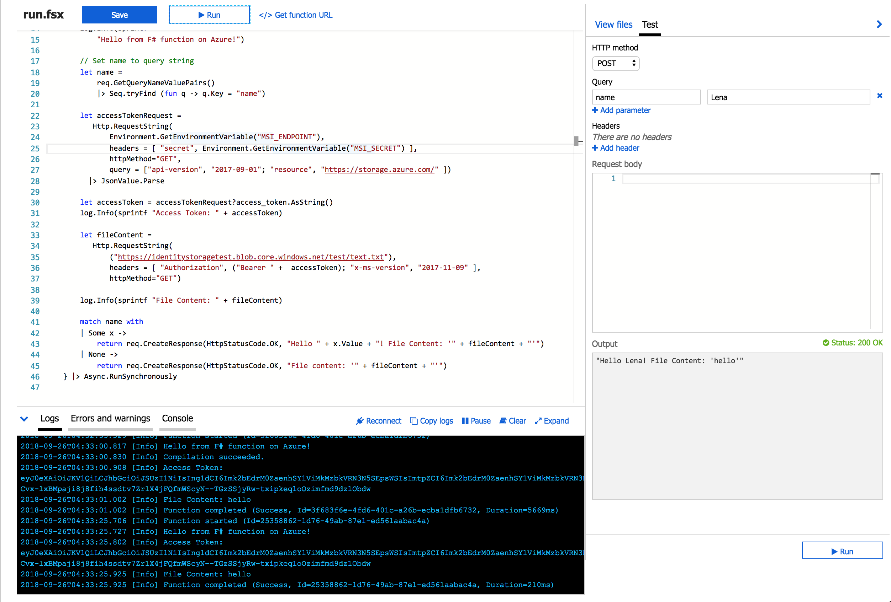

Welcome to my blog! For more useful information on technical topics follow me on Twitter at @lenadroid and subscribe to my YouTube channel.
For detailed documentation of Azure topics covered in this article, take a look at Azure Functions, Managed Identities documentation, and Azure CLI. To follow through examples, get started with Free Trial.
Introduction
In this article you will learn about using Managed Identities for secure and convenient approach to authenticate to Azure services from Serverless Functions without managing or storing any access keys or credentials!
We will create an Azure Function, obtain an access token from local service identity endpoint, and we will use the access token in the request to a file on Azure storage account.
To learn about why it is a good idea to use Managed Identities and how it can help make access to Azure resources more secure and less error-prone visit this page <- it has an overview and an example with Azure Linux VMs.
TL;DR: Managed Identities can significantly improve authentication process between cloud resources, reduce operational overhead and vulnerability of managing and storing authentication credentials.
Create a Storage Account
Set $storage_group and $storage_account to real values, the use the code below to create a new storage account and upload a file that we're going to request from the Azure Function later in the article.
Create a new Azure Functions App
We will be working with Azure Functions App in F#. For more information about using F# in Azure Functions check out the details here.
I am a big fan of F#, but feel free to use any other language supported by Azure Functions, overall process should be identical with a few language specific differences.
By the end of this step remember the name and resource group of your Azure Function.
Enable Managed Identity for the newly created Azure Function
Azure Functions work with system-assigned Managed Identities. Before we can use it with Azure Functions we first need to enable the feature.
First snippet will simply enable it, but the function won't be granted any roles to access any resources.
If you'd like to enable Managed Identity and grant permissions to the Azure Function with one command, there's another option.
You will find two new environment variables called MSI_ENDPOINT and MSI_SECRET after executing one of the snippets.
Code for the Azure Function in F#
As in the previous article, there are two main steps: requesting access token, and accessing the service providing the access token (a storage account in this case). However, there are a few differences with Azure Functions that are worth mentioning.
MSI_ENDPOINT is a URL from which an Azure Function can request tokens. MSI_SECRET is required as a secret parameter to HTTP GET request to this endpoint, along with api-version and resource parameters.
The following code shows end-to-end example of accessing Azure storage account through system-assigned Managed Identity and reading contents of a file stored on the storage account.
Don't forget to add FSharp.Data package to your dependencies.
For those of you interested in using an existing .NET library for requesting an access token, refer to this guide.
My example specifically uses REST API and not the Microsoft.Azure.Services.AppAuthentication library for .NET because this way you should be able to implement this functionality in any language other than .NET by just looking at what F# code does, as the implementation prototype is transparent.
Execution results with incorrectly assigned role and scope

Execution results with correctly assigned role and scope

Thank you for reading!
I hope this was useful, and if so - mention me on Twitter - I'll be happy to hear your thoughts!In the next parts we will learn about managed identities with Azure Kubernetes Service!